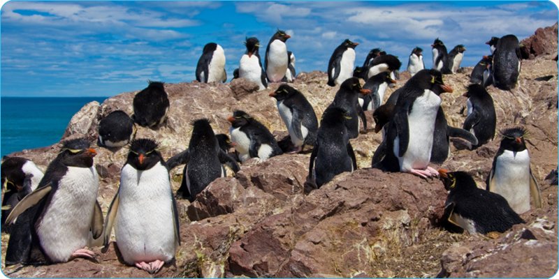
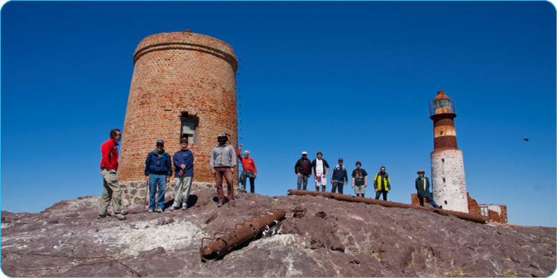

El Parque Nacional Isla Pingüino, ubicado en la costa atlántica de la provincia de Santa Cruz, Argentina, abarca una pequeña isla cercana a la ciudad de Puerto Deseado. Su principal atractivo es la colonia de pingüinos de penacho amarillo, además de otras especies de aves marinas y mamíferos, como lobos marinos y elefantes marinos. El parque se creó para proteger la biodiversidad y los ecosistemas costeros de la región, ofreciendo actividades turísticas como avistaje de fauna y senderismo.
Ubicación
San Martín 1137, Puerto Deseado, Santa Cruz.
Formas de llegar
En auto
El principal acceso a Puerto Deseado es través de la Ruta Nacional 281, que conecta a la localidad con la Ruta Nacional 3, y de allí hacia Río Gallegos en sentido sur y Comodoro Rivadavia en sentido norte.
En avión
Los aeropuertos más próximos a Puerto Deseado son los de Comodoro Rivadavia (Chubut) y Río Gallegos (Santa Cruz).
Objetivo
El parque se concentra en la conservación de su ecosistema costero-marino y la protección de su biodiversidad, que incluye especies de fauna y flora características de la región. En particular, busca preservar las colonias de pingüinos de penacho amarillo y otras aves marinas, así como los ecosistemas marinos que son fundamentales para el equilibrio ecológico de la zona. Además, el parque también promueve la educación ambiental y el turismo responsable, con el fin de generar conciencia sobre la importancia de la conservación de los recursos naturales y su uso sostenible.
Turismo
es clave debido a las variadas actividades que ofrece, las cuales permiten a los visitantes explorar y disfrutar de su rica biodiversidad. Entre las más destacadas se encuentran las excursiones para observar pingüinos de penacho amarillo en su hábitat natural, así como paseos en barco para avistar lobos marinos y aves marinas, además de ocasionales encuentros con ballenas. Estas actividades brindan a los turistas una oportunidad única de conectarse con la naturaleza y disfrutar de paisajes costeros impresionantes mientras aprenden sobre las especies que habitan en esta región protegida.
- 

- 